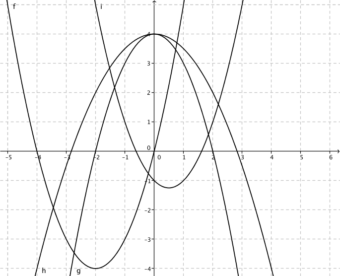
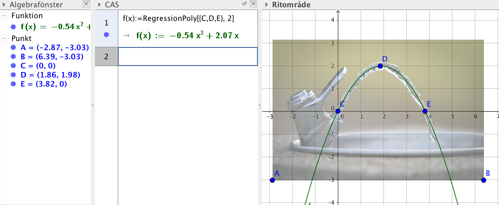
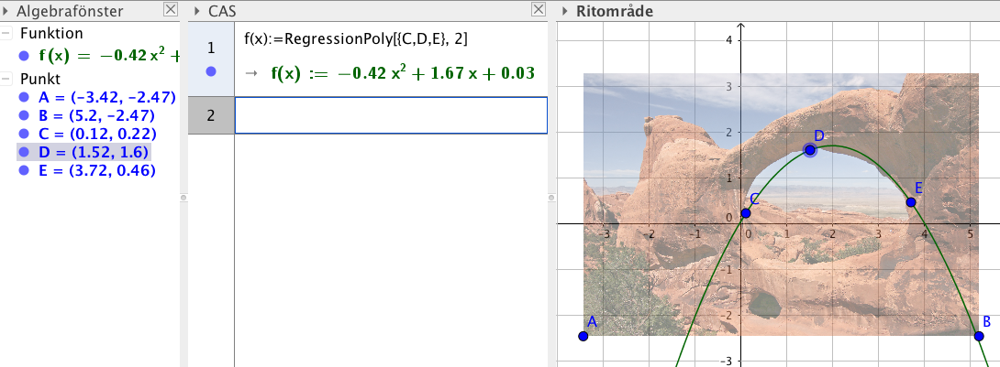

10. Parabeln - grafen av en andragradsfunktion
Grundformen för en andragradsfunktion ser ut som \(f(x)= ax^2 +bx+c\). \(a\), \(b\) och \(c\) påverkar olika på hur funktionen ser ut. Vi kallar grafen av en andragradsfunktion för en parabel.
Testa själv genom att ändra på värdet för \(a\), \(b\) och \(c\). Vad märker du?
- \(a\) inverkar på hur brant funktionen öppnar sig. Är \(a > 0\) öppnar sig parabeln uppåt. Är \(a > 0\) öppnar sig parabeln nedåt.
- \(b\) flyttar parabeln i sidled och
- \(c\) flyttar parabeln i höjdled.
Lösning
Funktionsvärdet får vi genom att sätta in värdet i funktionen.
\(f(-2) = -2(-2)^2-3(-2)-1 = -3\).
Lösning
Vi löser nollställena: \(-x^2+6x-5 = 0\).
\(\begin{array}{rcll} x & = & \dfrac{-6 \pm \sqrt{6^2-4(-1)(-5)}}{2\cdot (-1)} \\ x & = & \dfrac{-6 \pm \sqrt{16}}{-2} \\ x = \dfrac{-6-4}{-2}=5 & \textrm{ eller } & x=\dfrac{-6+4}{-2}=1 \\ \end{array} \)
Nollställena är i \(x_1=1\) och \(x_2=5\).
Toppen finner vi mitt emellan nollställena: \(\dfrac{5-1}{2} = 3\).
Y-koordinaten är: \(f(3) = -3^2+6\cdot 3-5 = 4\).
Toppens koordinater är \((3,4)\).
Toppen är den punkt där parabeln byter riktning. Toppen för en parabel finns mitt mellan nollställena. Vill vi räkna ut x-koordinaten räknar vi ut den via \(\dfrac{\dfrac{-b-\sqrt{b^2-4ac}}{2a} + \dfrac{-b+\sqrt{b^2-4ac}}{2a}}{2} = -\dfrac{b}{2a} \).
Uppgifter
Kombinera rätt funktion med rätt graf.

Välj bland följande:
\(f(x)\)\(g(x)\)\(h(x)\)\(i(x)\)Funktion Uttryck \(x^2+4x\) \(-x^2+4\) \(-\dfrac{1}{2}x^2+4\) \(x^2-x-1\) Funktion Uttryck \(f(x)\) \(x^2+4x\) \(g(x)\) \(-x^2+4\) \(h(x)\) \(-\dfrac{1}{2}x^2+4\) \(i(x)\) \(x^2-x-1\) - Bestäm funktionsvärdena \(f(-1)\) och \(f(2)\) för \(f(x)= -x^2-3x+1\).
Vi får \(f(-1)=-(-1)^2-3(-1) +1 = 3\) och \(f(2)=-2^2-3\cdot 2+1 = -9\).
- Bestäm för följande funktioner om grafen är funktionen är en parabel. Om det är en parabel så bestäm om den öppnar sig uppåt eller nedåt.
Funktion Parabel Inte parabel Öppnar sig uppåt Öppnar sig nedåt \( f(x) = x^2-3x \) \( f(x) = -3x^2 +2 \) \( f(x) = x^3+x^2 \) \( f(x) = x(x-1)+3 \) \( f(x) = 3(x^2-4) \) \( f(x) = x^2(x+2) \) Vi får följande
Funktion Parabel Inte parabel Öppnar sig uppåt Öppnar sig nedåt \( f(x) = x^2-3x \) \( f(x) = -3x^2 +2 \) \( f(x) = x^3+x^2 \) \( f(x) = x(x-1)+3 \) \( f(x) = 3(4-x^2) \) \( f(x) = x^2(x+2) \) - Bestäm nollställen för följande funktioner.
- \(f(x)= x^2-4x-5\)
Ekvationen \(f(x)=x^2-4x-5=0\) ger \(x_1=-1\) och \(x_2=5\).
- \(g(x)=x^2-4x\)
Ekvationen \(g(x)=x^2-4x=0\) ger \(x_1=0\) och \(x_2=4\).
- \(h(x)=x^2+4x+3\)
Ekvationen \(h(x)=x^2+4x+3\) ger \(x_1=-3\) och \(x_2=-1\).
- \(f(x)= x^2-4x-5\)
- Bestäm
ekvationen för parabeln som beskriver vattenstrålen från dricksfontänen. Bild

Lite beroende på hur man väljer men något i stil med

ekvationen för parabeln som beskriver brospannet för Xiangxi bron i Xiangxizhen, Hubei, Kina.Bild
Lite beroende på hur man väljer men något i stil med

ekvationen för parabeln som beskriver Eero Saarinens konstverk Gateway Arch i Saint Louis, USA. Bild
Lite beroende på hur man väljer men något i stil med

ekvationen för parabeln som beskriver hålet i Doulbe O Arch i Arches National Pari, Utah, USA. Bild
Lite beroende på hur man väljer men något i stil med

- Bestäm toppens koordinat för
Toppen hittar du mitt mellan nollställena. Gå via nollställena eller så direkt med formel.
- \(f(x)= x^2-2x\)
Nollställena är \(x^2-2x=0 \Leftrightarrow x=0\) och \(x=2\). Toppen finns mitt emellan dessa, alltså då \(x=1\).
\(y\)-koordinaten är \(f(1)=1^2-2\cdot1 = -1\).
Toppens koordinat är \((1,-1)\).
- \(g(x)= x^2-2x-8\)
\(g(x)= x^2-2x-8 =0\) då \(x=-2\) och \(x=4\).
Toppens \(x\)-koordinat hittar vi mitt emellan \(\dfrac{-2+4}{2}=1\).
\(y\)-koordinaten är \(f(1)=1^2-2\cdot 1-8 = -9\).
Toppens koorinat är \((1,-9)\).
- \(h(x)=-x^2 +6x+7\)
\(h(x)=-x^2 +6x+7 =0\) då \(x=-1\) och \(x=7\).
Toppens \(x\)-koordinat hittar vi i \(\dfrac{-1+7}{2}=3\).
\(y\)-koordinaten är \(f(3)=-3^2+6\cdot 3+7 = 16\).
Toppen koordinat är i \((3,16)\).
- \(f(x)= x^2-2x\)
- I vilka punkter skär \(f(x)=-x^2-x+6\) \(x\)-axeln?
\(x\)-koordinaterna för skärningspunkterna hittar vi genom att bestämma nollställena. Alltså \(-x^2-x+6=0\) som har lösningarna \(x=2\) och \(x=-3\).
För skärningspunkterna gäller att \(y\)-koordinaten har värdet 0.
Skärningspunkterna är \((2,0)\) och \((-3,0)\).
- I vilken punkt skär \(f(x)=x^2-4x-5\) \(y\)-axeln?
Då funktionen skär \(y\)-axeln gäller det att \(x\)-koordinaten har värdet 0. Vi får att \(f(0)=-5\).
Punkten är \((0,-5)\).
- En parabel går genom punkterna \((-1,0)\), \((0,-5)\) och \((2,-9)\). Bestäm uttrycket för funktionen.
Lös uppgiften utan att använda dig av räknare eller räknarprogram. Du kan kolla lösningen på räknare eller räknarprogram. Ekvationssystemet kan du lösa på räknare om du vill.
En andragradsfunktion ser ut som \(f(x)=ax^2+bx+c\). Bilda ett ekvationssystem och lös det.Vi får ekvationssystemet
\(\left\{ \begin{array}{rcl} a(-1)^2+b(-1)+c & = & 0 \\ a\cdot 0 + b\cdot 0 + c & = & 5 \\ a\cdot2^2+b\cdot 2+c & = & -9 \\ \end{array} \right.\)
Som har lösningarna \(a=1\), \(b=-4\) och \(c=-5\).
Funktionen är \(f(x)=x^2-4x-5\).